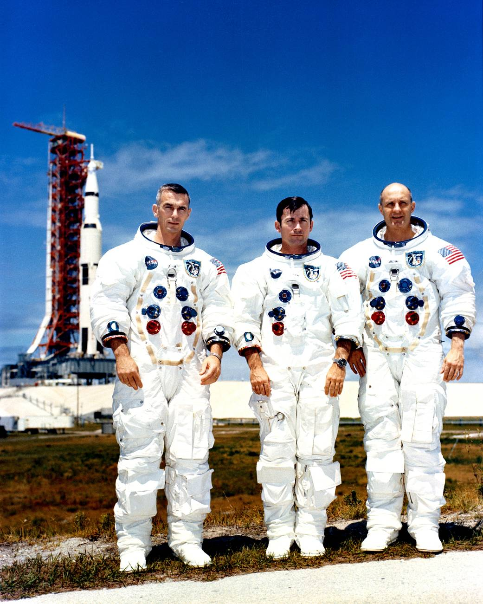

Thomas Stafford was one of NASA's most experienced astronauts and a veteran of the Gemini program before commanding Apollo 10. During the mission, he helped conduct the final dress rehearsal for the Moon landing by piloting the Lunar Module to within a few miles of the lunar surface. His calm leadership and technical expertise were critical to the mission's success.
Later in his career, Stafford commanded the historic Apollo-Soyuz Test Project, the first joint space mission between the United States and the Soviet Union. He is remembered as one of NASA's most skilled commanders and an important figure in international space cooperation.
John Young was one of the most accomplished astronauts in history. Before Apollo 10, he had already flown on Gemini 3 and Gemini 10. During Apollo 10, he remained in lunar orbit aboard the Command Module Charlie Brown while his crewmates tested the Lunar Module.
Young would later command Apollo 16 and become one of only twelve people to walk on the Moon. He also commanded the first Space Shuttle mission, making him one of the few astronauts to play major roles in multiple eras of American spaceflight.
Eugene Cernan flew aboard Gemini 9A before joining the Apollo 10 crew. During the mission, he helped fly the Lunar Module Snoopy during its close approach to the lunar surface, gathering valuable data that would later assist Apollo 11.
Cernan later commanded Apollo 17 and became the last human to walk on the Moon. His final words before leaving the lunar surface remain among the most famous statements in space exploration history.